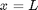
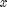
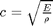
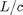
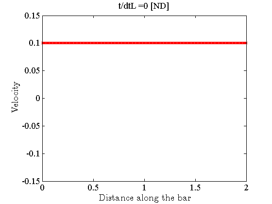
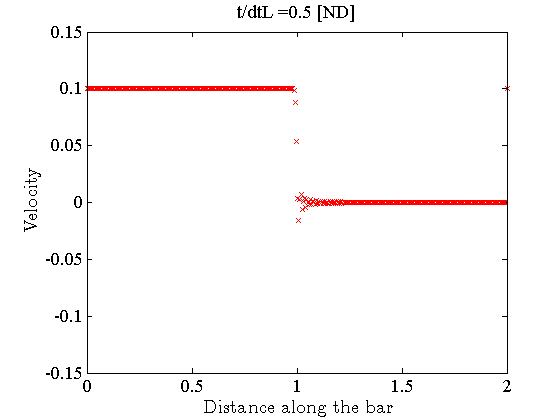
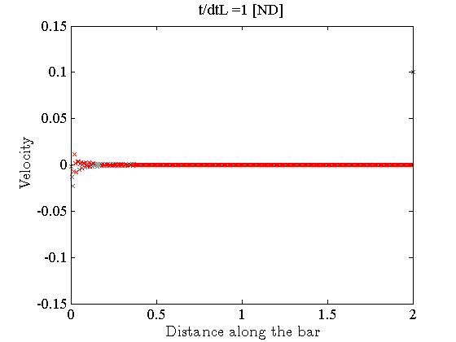
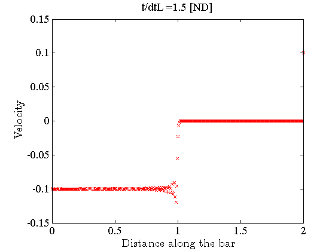
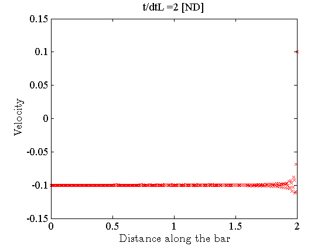
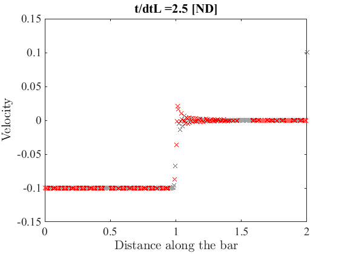

Axial wave in a bar; 1-D model
Contents
Link to the m-file.
Description
A steel bar of uniform cross-section is clamped at . It is given uniform initial velocity in the direction of increasing . The motion is to be integrated with the centered difference algorithm.
The analytical solution will present the following features: the traversal of the length of the bar by the longitudinal wave will be determined by the mechanical properties of the material and the length of the bar. The velocity of the material will change from positive to zero to negative and back again due to the reflections of the wave at the ends of the bar.
Solution
function pub_axial_wave_expl_1D
u=physical_units_struct;
The material parameters correspond to structural steel.
E=205000*u.MEGA*u.PA;
nu=0.3;
rho = 7850*u.KG/u.M^3;
The bar is 2 m long, of a rectangular cross-section.
L = 2*u.M;
W = 4*u.MM;
H = 8*u.MM;
tolerance =W/1000;
The bar is initially moving as a whole towards the clamped end with a uniform velocity.
vmag = 0.1*u.M/u.SEC;
The mesh is created of 361 (arbitrary number) L2 elements. Note that the cross-sectional area is set here.
[fens,fes] = L2_block(L,361,struct('other_dimension',W*H));
Compose the model data.
clear model_data
model_data.fens =fens;
The two-point Gauss quadrature is an overkill, but it cannot hurt. Both stiffness and mass will be calculated correctly. Note that lumped-mass matrix will be generated as the the solver is going to be the centered-difference time integrator.
clear region region.property = 'isotropic'; region.E =E; region.nu=nu; region.rho=rho; region.fes= fes; region.integration_rule = gauss_rule (struct('dim', 1, 'order', 2)); model_data.region{1} =region;
The node at is restrained.
clear essential essential.component= []; essential.fixed_value= 0; essential.node_list = fenode_select (fens,... struct('box',[L,L],'inflate',tolerance)); model_data.boundary_conditions.essential{1} = essential;
The bar starts at zero displacement and uniform velocity in the direction of increasing .
clear initial_condition
initial_condition.u_fixed_value= @(x)0*x;
initial_condition.v_fixed_value= @(x)0*x+vmag;
model_data.initial_condition = initial_condition;
The longitudinal elastic wave in the bar will have the speed of

so for our particular material, in meters per second
c=sqrt(E/rho);
c/(u.M/u.SEC)
ans = 5.1102e+03
Therefore, it will take the wave  to traverse the length of the bar. For our material and length of the bar (in milliseconds):
dtL=L/c;
dtL/(u.SEC/1000)
ans = 3.9137e-01
so that the first figure should show the wave of zero velocity produced by the clamped end at the middle of the bar and the second figure will show the wave to have reached the free end of the bar and so on.
The motion will be tracked for the length of time it will take the wave to travel from the clamped and to the free end, back to the clamped end and back to the free end again. So three times the traversal time.
model_data.tend = 3*dtL;
We will take the output interval to be one half of the traversal time
dtOutput=dtL/2;
The output() function animates the values of the displacement or velocity fields by plotting a marker on the vertical axis vs. the distance along the bar on the horizontal axis at each node.
nout=0;
function output(t, model_data)
if (nout*dtOutput<=t)
set_graphics_defaults
% The following block will plot the displacement along the bar
% as a function of the distance along the bar. Uncomment the
% following three lines if you wish to see the displacement.
% plot(model_data.geom.values,model_data.u.values);
% set(gca,'xlim',[0,L]);
% set(gca,'ylim',[-5e-4,5e-4]/10);
% The following block will block the velocity along the bar as
% a function of the distance along the bar. Uncomment the
% following three lines if you wish to see the velocity.
plot(model_data.geom.values,model_data.v.values,'rx');
labels('Distance along the bar',' Velocity');
set(gca,'xlim',[0,L]);
set(gca,'ylim',[-1,1]*vmag*1.5);
title([ 't/dtL =' num2str((t/dtL),2) ' [ND]']);
snapnow;% update the display
nout= nout+1;
end
end
model_data.observer =@output;;
corner=fenode_select (fens,struct('box',[0 0],'inflate',tolerance));
corneru = [];
Solve using the centered-difference integrator of the equations of motion. Note that the progress of the simulation is being reported in graphical form using the output() observer function.
model_data =deformation_linear_direct_explicit_CD(model_data);     

Discussion
The wave is tracked fairly well, but there is quite a bit of noise associated with the passage of the front of the wave. This is a general feature of the centered-difference algorithm.
end